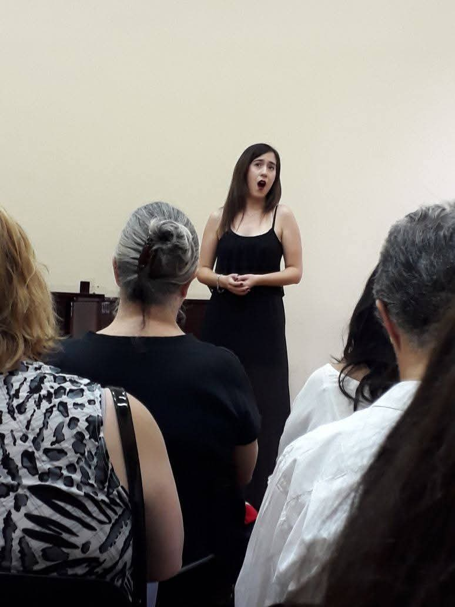
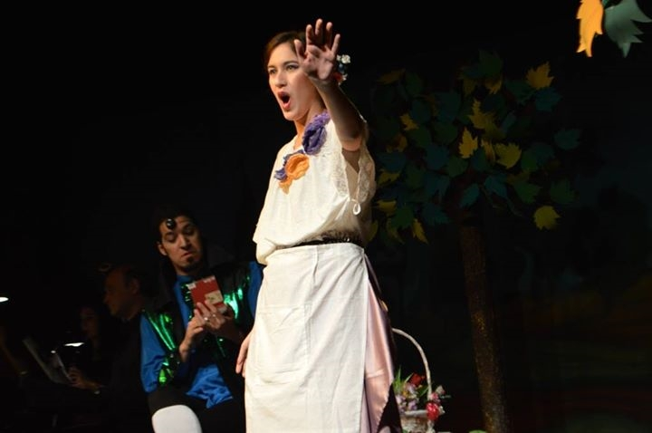

Maria Sol Arru (Soprano)


Maria Sol Arru (Soprano)
Formada en Canto actualmente en el Conservatorio Superior de Música “Julian Aguirre” cursando el Profesorado con la Maestra Mónica Boffino.
Anteriormente en el Conservatorio Superior de Música “Manuel de Falla” con las Maestras Diana Arzoumanian, Graciela Iglesias, en Repertorio con la Maestra Graciela Ulibarri, donde me recibí como Técnica en Música orientada en Canto e inicié el Profesorado del mismo instrumento.
Además estudié con los Maestros Elizabeth Canis y Darío Schmunck.
Formada en Guitarra en el Conservatorio de Música “Astor Piazzolla”
Mi experiencia como Cantante Solista y Coreuta Lírica me llevó a participar en
Estrenos del compositor contemporáneo Argentino Martin Oscar Nicieza (Ciclo de canciones con texto de Hector Massolo –año 2024-; Soprano solista y coreuta en Requiem MV-18 –año 2017- Soprano solista y coreuta en Sinfonia a Malvinas - año 2016-)
Cantante invitada de la agrupación 12 cuerdas, interpretando obras de John Dowland (2017)
Interpreté el Rol de Bastiana en la ópera Bastian und Bastianne (Mozart) de la compañía de opera independiente Música en Escena (año 2015) y en 2014 para la misma compañía interpretando el rol de pastorcita en la opera “La noche mágica de Amahl”
Participé además como Soprano II en la Fantasía OP. 80 de Beethoven junto al coro del Conservatorio Manuel de Falla bajo la dirección de la batuta de los Maestros Dominique Fanal, Miguel Gilardi en Facultad de derecho – Septiembre 2014; Auditorio del Instituto Superior Santa Ana Octubre 2014. Iglesia Redonda de Belgrano; Iglesia Evangélica Metodista ; Auditorio CSM Manuel de Falla Octubre 2013. Auditorio del Instituto Superior Santa Ana Noviembre 2013
En el ámbito popular realicé presentaciones como coreuta de la Banda de Heavy Metal Sinfónico “Dominus Inferi” en escenarios como Obras, Teatro Flores, La Colorada. (2008-2009)
En los últimos años participé como cantante invitada de la banda de Heavy Metal Captor para interpretar “Medusa”, de la banda L.I.A.M. para interpretar “Down the Rabbit-hole” y realizando cover de bandas del estilo como por ejemplo la versión acústica de “Nothing Else Matters”- Metallica.
También realicé presentaciones interpretando folclore en el centro cultural Casa de Asia (2015)
A su vez entre los años 2013 – 2014 formé parte del Taller de Comedia Musical en el conservatorio Manuel de Falla bajo el Maestro Sergio Goldwasser.